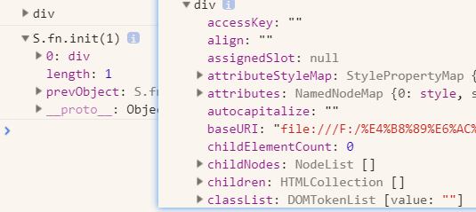
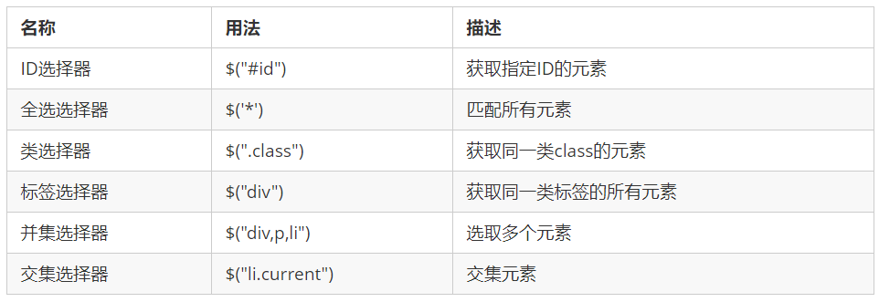
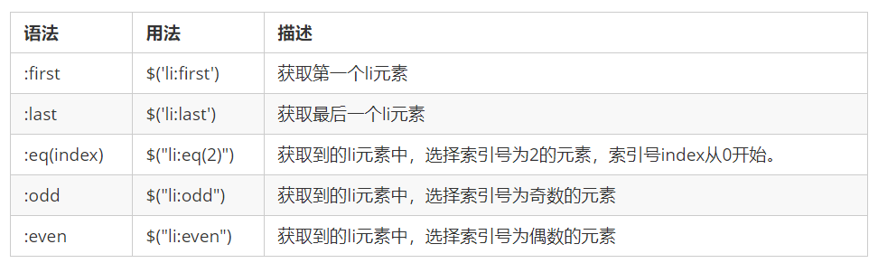
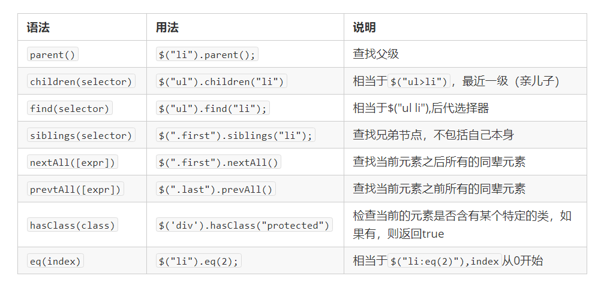

1. jQuery 入门
能够说出什么是 jQuery
能够说出 jQuery 的优点
能够简单使用 jQuery
能够说出 DOM 对象和 jQuery 对象的区别
jQuery 概述
jQuery 的基本使用
1.1 jQuery 概述
1.仓库： 可以把很多东西放到这个仓库里面。找东西只需要到仓库里面查找到就可以了。
2.JavaScript库：即 library，是一个封装好的特定的集合（方法和函数）。从封装一大堆函数的角度理解库，就是在这个库中，封装了很多预先定义好的函数在里面，比如动画animate、hide、show，比如获取元素等。
简单理解： 就是一个JS 文件，里面对我们原生js代码进行了封装，存放到里面。这样我们可以快速高效的使用这些封装好的功能了。
比如 jQuery，就是为了快速方便的操作DOM，里面基本都是函数（方法）。
3.常见的JavaScript 库
jQuery
Prototype
YUI
Dojo
Ext JS
移动端的zepto
4.这些库都是对原生 JavaScript 的封装，内部都是用 JavaScript 实现的，我们主要学习的是 jQuery。
1.2 jQuery 的概念
1.jQuery 是一个快速、简洁的 JavaScript 库，其设计的宗旨是“write Less，Do More”，即倡导写更少的代码，做更多的事情。
2.j 就是 JavaScript； Query 查询； 意思就是查询js，把js中的DOM操作做了封装，我们可以快速的查询使用里面的功能。
3.jQuery 封装了 JavaScript 常用的功能代码，优化了 DOM 操作、事件处理、动画设计和 Ajax 交互。
学习jQuery本质： 就是学习调用这些函数（方法）。
jQuery 出现的目的是加快前端人员的开发速度，我们可以非常方便的调用和使用它，从而提高开发效率。
2. 优点
轻量级。核心文件才几十kb，不会影响页面加载速度
跨浏览器兼容。基本兼容了现在主流的浏览器
链式编程、隐式迭代
对事件、样式、动画支持，大大简化了DOM操作
支持插件扩展开发。有着丰富的第三方的插件，例如：树形菜单、日期控件、轮播图等
免费、开源
1.3 jQuery 的基本使用
1. jQuery 的下载
1.官网地址： https://jquery.com/
2.版本：
1x ：兼容 IE 678 等低版本浏览器， 官网不再更新
2x ：不兼容 IE 678 等低版本浏览器， 官网不再更新
3x ：不兼容 IE 678 等低版本浏览器， 是官方主要更新维护的版本
3.各个版本的下载：https://code.jquery.com/
2. 使用步骤
1.直接复制粘贴一个新文件；
https://www.bilibili.com/video/BV1a4411w7Gx?p=4&spm_id_from=pageDriver
3. 入口函数
1 | $(function () { |
1 | $(document).ready(function(){ |
1.等着 DOM 结构渲染完毕即可执行内部代码，不必等到所有外部资源加载完成，jQuery 帮我们完成了封装。
2.相当于原生 js 中的 DOMContentLoaded。
3.不同于原生 js 中的 load 事件是等页面文档、外部的 js 文件、css文件、图片加载完毕才执行内部代码。
4.更推荐使用第一种方式。
4. jQuery 的顶级对象 $
1.$ 是 jQuery 的别称，在代码中可以使用 jQuery 代替 $，但一般为了方便，通常都直接使用 $ 。
2.$ 是jQuery 的顶级对象， 相当于原生JavaScript中的 window。把元素利用$包装成jQuery对象，就可以调用jQuery 的方法。
5. jQuery 对象和 DOM 对象
1.用原生 JS 获取来的对象就是 DOM 对象。
1 | var myDiv = document.querySelector('div'); //myDiv 是DOM对象 |
2.jQuery 方法获取的元素就是 jQuery 对象。
1 | $('div'); // $('div')是一个jquery对象 |
3.jQuery 对象本质是： 利用$对DOM 对象包装后产生的对象（伪数组形式存储）。
- div是原生
- S.fn.init(1)是jquery

==注意：==
只有 jQuery 对象才能使用 jQuery 方法，DOM 对象则使用原生的 JavaScirpt 方法。
2. 相互转换
https://www.bilibili.com/video/BV1a4411w7Gx?p=7&spm_id_from=pageDriver
1.DOM 对象与 jQuery 对象之间是可以相互转换的。
2.因为原生js 比 jQuery 更大，原生的一些属性和方法 jQuery没有给我们封装.,要想使用这些属性和方法需要把
jQuery对象转换为DOM对象才能使用。
3.DOM 对象转换为 jQuery 对象： $(DOM对象)
$('div')
4.jQuery 对象转换为 DOM 对象（两种方式）
$('div') [index] index 是索引号
$('div') .get(index) index 是索引号
2. jquery常用API
- 能够写出常用的 jQuery 选择器
能够操作 jQuery 样式
能够写出常用的 jQuery 动画
能够操作 jQuery 属性
能够操作 jQuery 元素
能够操作 jQuery 元素尺寸、位置 - jQuery 选择器
jQuery 样式操作
jQuery 效果
jQuery 属性操作
jQuery 文本属性值
jQuery 元素操作
jQuery 尺寸、位置操作
2.1 jQuery 选择器
1. 基础选择器
1.原生 JS 获取元素方式很多，很杂，而且兼容性情况不一致，因此 jQuery 给我们做了封装，使获取元素统一标准。
$(“选择器”) // 里面选择器直接写 CSS 选择器即可，但是要加引号

2. jQuery 层级选择器
1.
| 名称 | 用法 | 描述 |
|---|---|---|
| 子代选择器 | $(“ul>li”); | 使用>号，获取下一层级的元素。不会获取更下一层的 |
| 后代选择器 | $(“ul li”); | 使用空格，代表后代选择器，获取ul下所以li元素。 |
2.jQuery 设置样式
$('div').css('属性', '值')
3. 隐式迭代（重要）
1.遍历内部 DOM 元素（伪数组形式存储）的过程就叫做隐式迭代。
2.简单理解：给匹配到的所有元素进行循环遍历，执行相应的方法，而不用我们再进行循环，简化我们的操作，方便我们调用。
4. jQuery 筛选选择器
1.

5. jQuery 筛选方法（重点）
1.

重点记住： parent() children() find() siblings() eq()
6. jQuery 里面的排他思想
1.想要多选一的效果，排他思想：当前元素设置样式，其余的兄弟元素清除样式。
1 | $(this).css("color","red"); |
x. 视频看到
1.https://www.bilibili.com/video/BV1a4411w7Gx?p=7&spm_id_from=pageDriver
- 相互转化